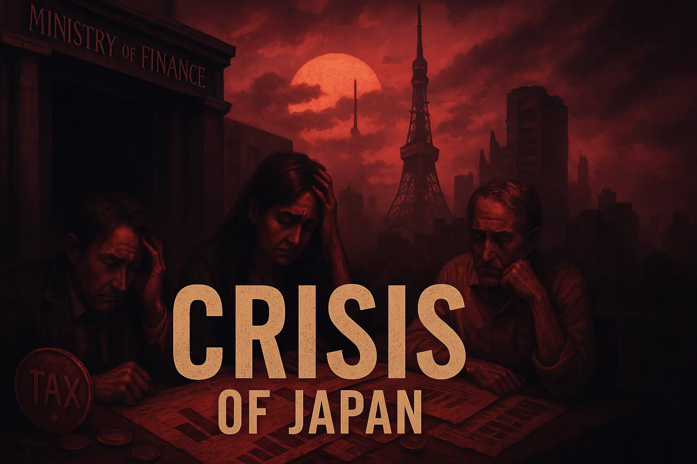

政治制度と危機の考察
このページでは、日本の政治制度、法治国家としての体制、三権分立、そしてそれらが実際に機能しているかについて、多角的に掘り下げて考察します。
現在の制度が抱える問題点や矛盾、そしてその背後にある構造に踏み込み、「今、何が起きているのか」をわかりやすく解説します。
【暫定版】フェンタニル問題の詳細
【簡易場】やさしい政治制度説明
【完全版】崩壊寸前の日本：法治国家の終焉と最悪シナリオ
【簡易版】危機の構造を理解しよう（中高生向け）